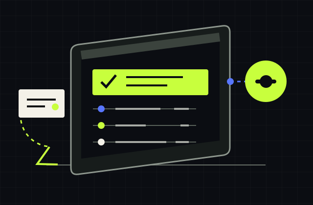
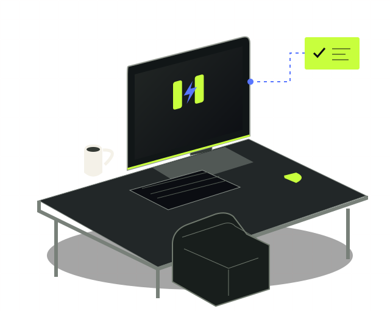
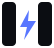
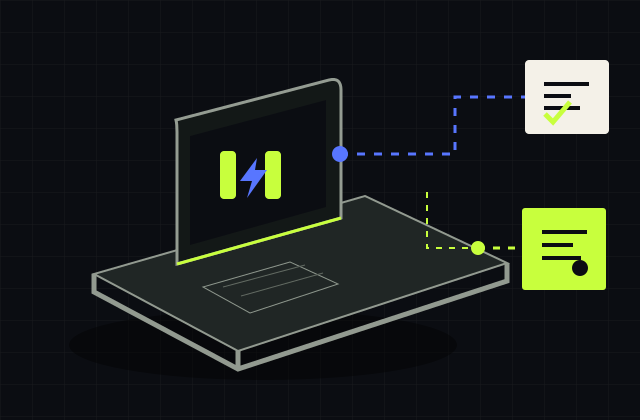
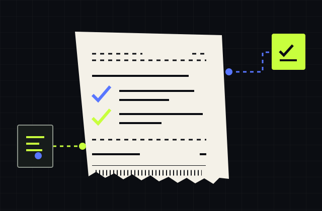
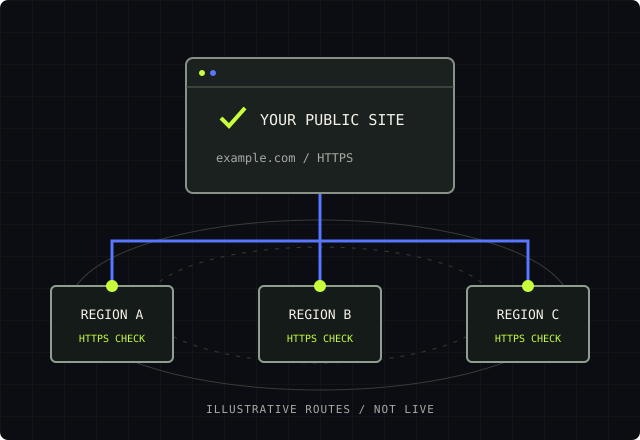
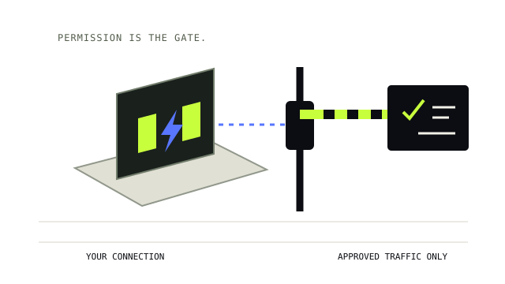
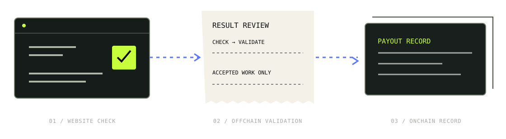

Set your limits.
Opt in, choose approved destinations, and set when checks can run and how much data they can use.
Let your internet connection run small, approved website checks for paying customers while you’re away.
Meet your AFK mode ↗

HARD LIMITS. YOUR OFF SWITCH. THAT’S THE WHOLE THING.Your connection takes the side quest.
You keep the controls.

Opt in, choose approved destinations, and set when checks can run and how much data they can use.

When eligible work is available, your connection helps check a customer’s public website.

Results are reviewed before acceptance. Payment may use Robinhood Chain; availability and terms will apply.
A working little simulation.
Zero checks leave your browser.
Nothing runs until you say so.
Only selected destinations. No arbitrary browsing or unrestricted proxy access.
A simple question. A useful first mission.
Companies can request checks of their own public websites from different regions, helping spot differences in availability and responses.
The pilot is scoped to approved public endpoints. No logins, private accounts, or open-ended traffic routing.
See a sample check request ↗
Useful doesn’t mean unrestricted.
Here’s what the product is designed to allow.

Small requests to approved public website destinations. AFKMAXX is not an unrestricted residential proxy service.
Yes. You control when checks run and can pause new checks. A daily data cap limits usage.
Yes. Review the approved destination list and check history. Checks must stay within your selected permissions.
Then there’s nothing to run or earn. Work availability and income are never guaranteed.
AFKMAXX must validate results before accepting work. Verification rules are still being finalized for the pilot; a successful response alone does not guarantee payment.
Robinhood Chain is the intended layer for inspectable payout records and withdrawals for accepted work. It does not execute or prove website checks.
AFKMAXX is independent and is not endorsed by Robinhood. Integration, supported withdrawals, fees, and eligibility will be confirmed before the pilot opens.
Explore the payout screen ↗
There is no earnings estimate or guaranteed income. Payment depends on available work, acceptance, and the terms published before participation.
The proposed checks do not need your browsing history, personal accounts, or page contents from your browsing. Exact permissions and data handling will be documented before installation is available.
This demo needs no wallet. Wallet requirements and withdrawal options for the proposed Robinhood Chain integration will be specified before the pilot opens.
Not yet. The pilot is not open and this website does not collect applications or email addresses.
The pilot isn’t open yet. No signup, no wallet connection,
no “you’re on the list” fiction. Just a first look.